Nyzo version 621 (commit on GitHub) adds options to TransactionIndexedSearchCommand to make this command more useful.
This version affects the client only.
In CommandEndpointWeb.getProgressPage(), the back button was made slightly friendlier. Before, it would always go back to the root of the client. Now, it goes back to the form for any commands that have forms.
As the TODO notes, adding the argument values to the link would further improve this behavior.
Later in the same method, one of the null arguments to SimpleExecutionResult was removed when an error result is produced. This is due to a reordering of the arguments in this constructor to support a variable number of CommandTable objects. Instead of passing null for the CommandTable, this result now omits the CommandTable.
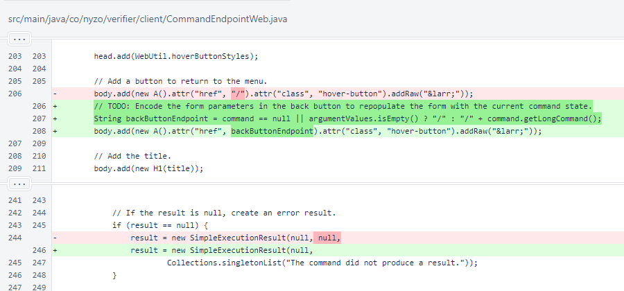In SimpleExecutionResult, the single CommandTable was replaced with an array of CommandTable objects.
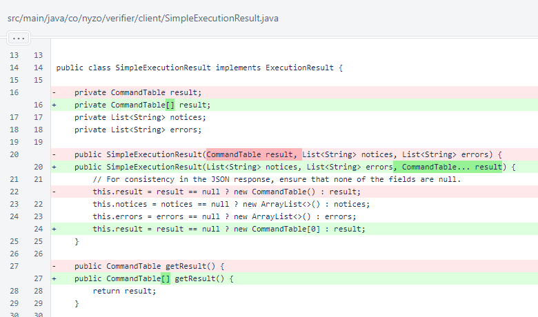In SimpleExecutionResult.toHtml(), the array of tables is now rendered. Rendering is the same; the large number of changed lines is due to nesting in the loop. Also, the result has been replaced by table, which is an element of result. This section of code is the case where rows and columns are inverted (headers at left instead of top).
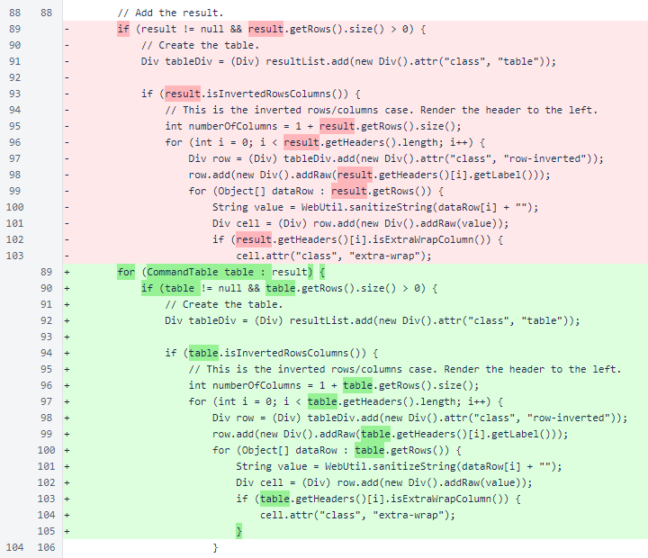This section of code renders the headers for the non-inverted (headers at top) case.

This section of code renders the data for the non-inverted case.
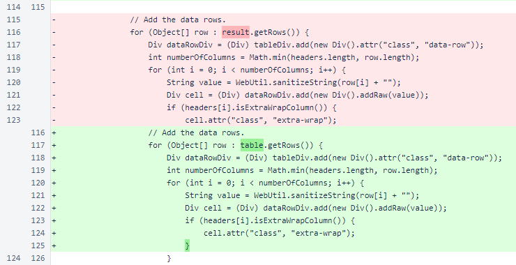In SimpleExecutionResult.toConsole(), the array of CommandTable objects is now printed.
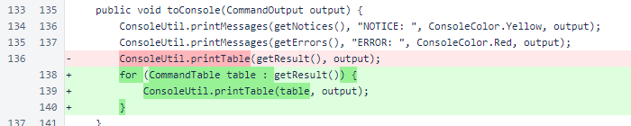In SimpleExecutionResult.toJson(), a condition was added for rendering an array of CommandTable objects. This method was written to render a single CommandTable exactly as it was rendered before while nesting multiple CommandTable objects within a JSON array.
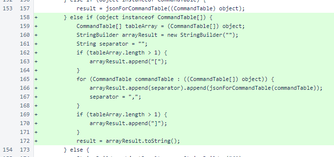The searchPrefix, senderReceiverFlag, minimumTimestamp, maximumTimestamp, minimumBlockHeight, and maximumBlockHeight arguments were added to the TransactionIndexer.transactionsForAccount() method. These arguments are all used to filter the transactions retrieved by this method. Before reading the file, some work is done on the arguments to allow for more efficient filtering.
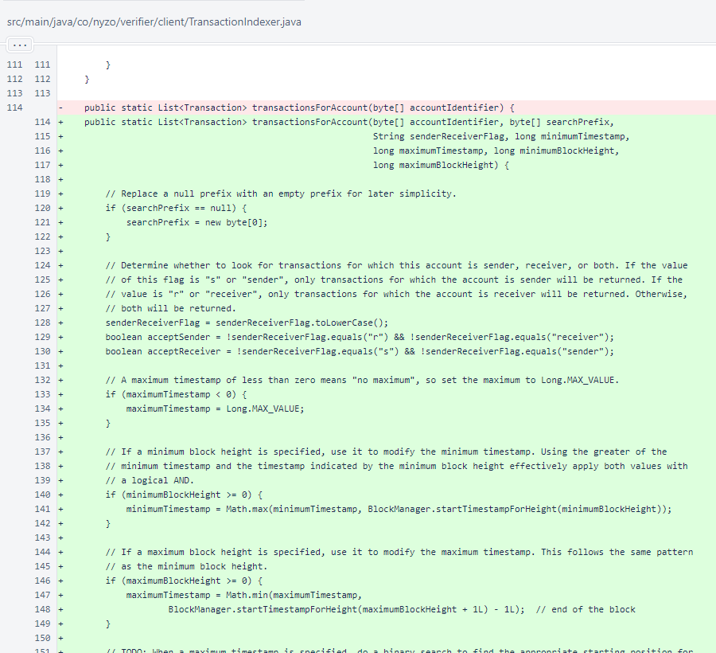The TODO notes some improvements that are necessary in the near future for this method and the associated command. The comment, which incorrectly stated that a list of timestamps was being built, was corrected to state that a list of offsets is being built.
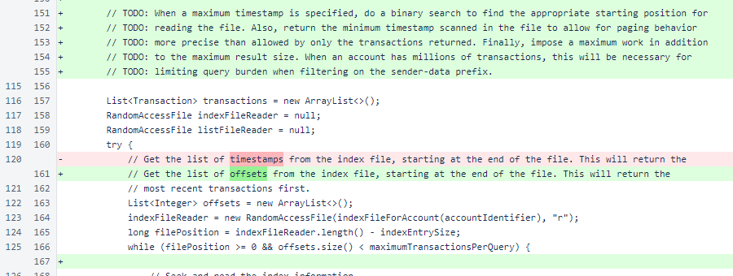Instead of adding all offsets as they are encountered, the filters are now considered before adding a transaction's offset to the list.
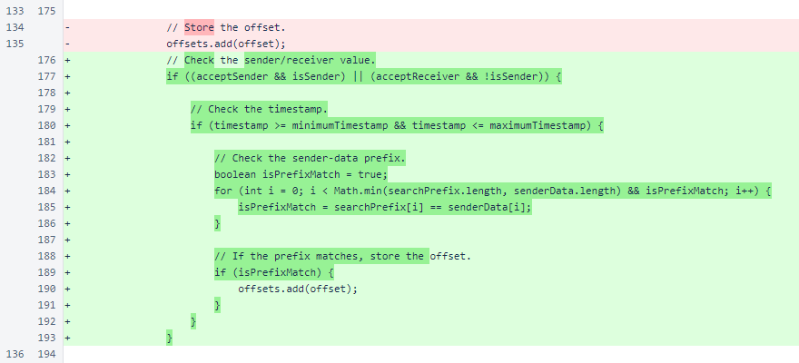The change of the SimpleExecutionResult constructor required changes in numerous commands. The first of these is BalanceDisplayCommand.
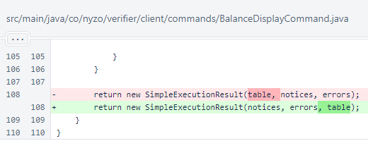The SimpleExecutionResult constructor call was updated in ClientHealthCommand.
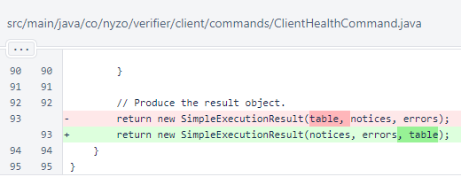The SimpleExecutionResult constructor call was updated in CoinsInCirculationCommand.
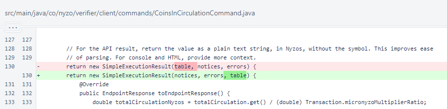The SimpleExecutionResult constructor call was updated in CycleTransactionListCommand.
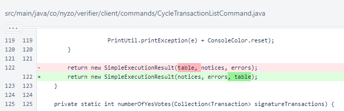The SimpleExecutionResult constructor call was updated in FrozenEdgeCommand.
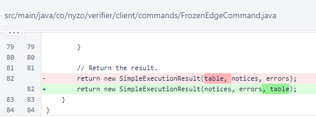The SimpleExecutionResult constructor call was updated in NttpDataGenerateCommand.
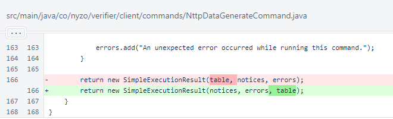The SimpleExecutionResult constructor call was updated in PrefilledDataCreateCommand.
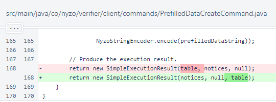The SimpleExecutionResult constructor call was updated in PrivateNyzoStringCommand.
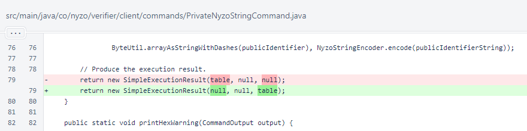The SimpleExecutionResult constructor call was updated in PublicNyzoStringCommand.
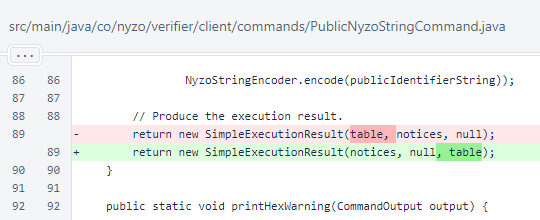The SimpleExecutionResult constructor call was updated in TransactionForwardCommand.

The new filtering arguments were added to TransactionIndexedSearchCommand.
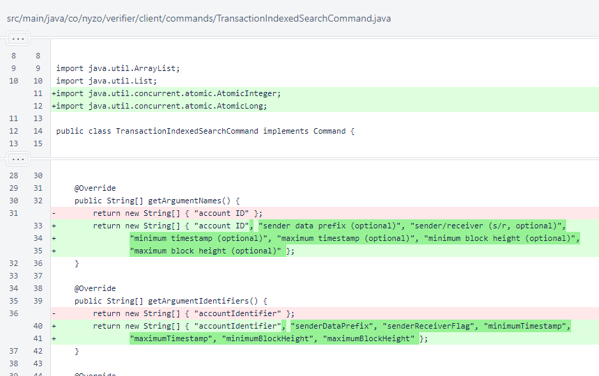In TransactionIndexedSearchCommand.run(), the new arguments are retrieved. The notices were removed, as they are now added later to a supplemental table.
The single result table was renamed to transactionTable.
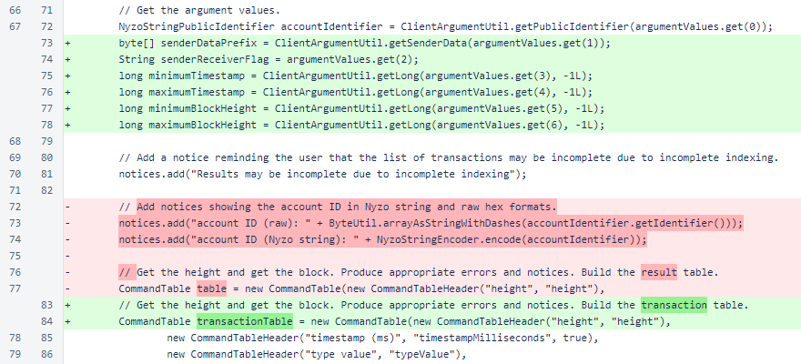The new arguments are passed to TransactionIndexer.transactionsForAccount().

A supplementalTable was added with the information previously contained in the notices. This provides better structure, especially in the JSON form.
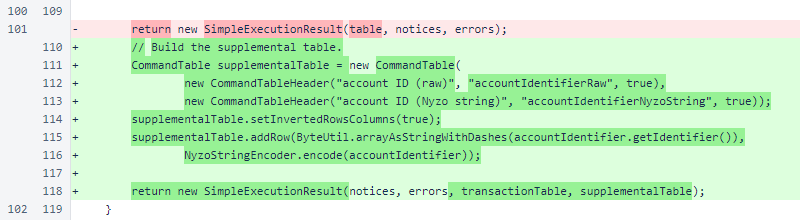The SimpleExecutionResult constructor call was updated in TransactionSearchCommand.
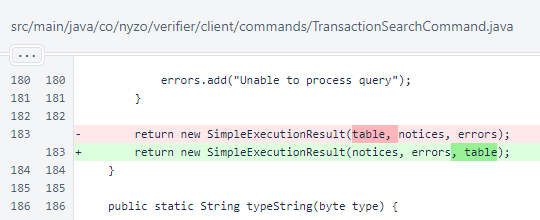In TransactionIndexerTest, negative timestamps were eliminated to avoid complications with the new timestamp filter. The call to TransactionIndexer.transactionsForAccount() now includes the new arguments, though the behavior of these arguments is not yet tested.
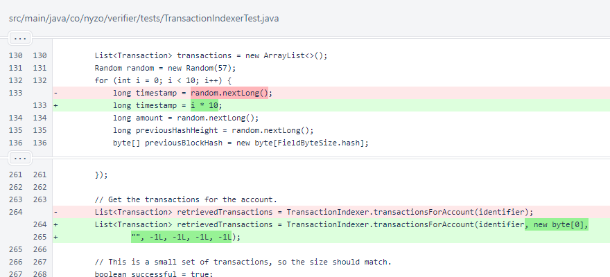